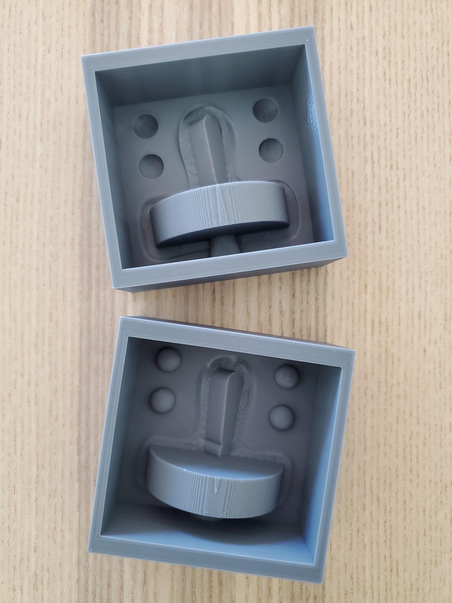

A6: Molding and casting pt 2!
As a follow up to Part 1 of my molding and casting journey, I completed the 3D print of my mold-for-mold.
After finishing the positives, I created the negatives for my mold by placing a larger box that fit around my positives.
To complete the 3"x3" huge DnD game token, I added some keys and a sprue. It was ready for printing!

However, I ran into some massive Y-axis layer shifting. I had to go through a ton of troubleshooting in between each print to resolve it.
I tightened the Y (and X) axis, releveled the bed, cleaned & applied adhesive to the glass bed, slowed down the nozzle speed and controlled for humidity and temperature.
The challenge was that each half of the mold took approximately 7 to 8 hours to print. I lost all of Wed, Thurs and Fri trying to figure this out.
I was running out of time, so I scaled my model down to 2"x2" large DnD game token to reduce my print time.
Ultimately, tightening the Y-axis seemed to reduce the layer shifting the most. I was barely able to print my mold-for-molds...
Anthony still had some residual Y-axis layer shifting with his Settlers of Catan pieces, though.

Rhino File for Both Molds
STL File for Mold 1
STL File for Mold 2
The next step was to create the silicone mold. I had very little time to waste, so everything I did after needed to go smoothly.
To help, Anthony recommended I use distilled water to determine how much volume I would need for both molds.
I was able to make the *exact* amount of Oomoo, which just barely covered both my molds.
In hindsight, I should have made a little more Oomoo. I just got super lucky this time around.
The remaining steps of my silicone mold making went without any hiccups.